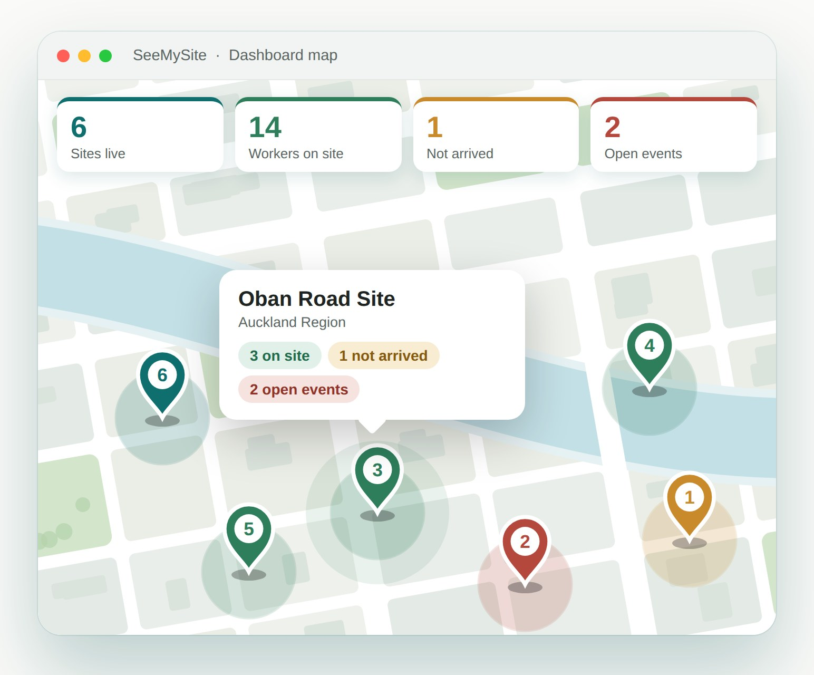

Scheduling and time tracking for cleaning companies
Know who’s on site, who hasn’t arrived, and how long they were there. Your cleaners tap in on their own phones, and you get accurate timesheets and proof of service. An owner/manager plus ten cleaners is $25 per month.

Built for the way a cleaning business really runs
You might manage 20 to 30 contracts, up to seven days a week. Some are small offices cleaned once or twice a week, some are cafés or restaurants that need a clean five days a week, and a few are larger multi-site or industrial buildings that need deeper cleans. You have perhaps five to ten workers across the week: three or four go-to people who have been with you for years, and casuals who do a few shifts a week.
Your business changes constantly. Someone is sick, a car won’t start, a child is ill, and you have to fill the gap fast. Your focus is quality, so you don’t want to spend more time than you have to scheduling people and checking that they are on site. That is what SeeMySite does.
Three questions every cleaning manager asks
Did my cleaner turn up?
See who is on site right now, and who hasn’t arrived, on your dashboard and map. Don’t find out when the client calls.
How long were they actually there?
Cleaners check in and out on their own phones, and each check-in is verified by GPS and time-stamped. You pay for the time worked. In my experience, unmeasured hours can account for 10 to 25 percent of payroll cost.
Can I prove the work was done?
Cleaners can take photos on site as a record of the work. When a customer asks, “Was my building cleaned, how long was the cleaner there, did they clean to the standard I expect?”, you can show them.
“If I can’t measure, how can I manage?”Barry Williams, Founder
Real situations, solved
The missing cleaner
An industrial building needs a deep clean, so you schedule three cleaners for an 11:00 pm start, after the customer’s late shift finishes at 10:00 pm. At 11:05 only two have arrived, and the third hasn’t called. Without visibility, the two who are there take an extra hour each, and they’re late for their next site.
With SeeMySite, you see at 11:05 on your dashboard that two of three have arrived. You can reassign the shift to someone available, or cover it from another crew, while the others keep working.
The right people, in minutes
You’ve just won a contract that requires every worker on site to have a heavy-lifting qualification and first-aid skills. With a spreadsheet or a paper file, you’re digging through records.
With SeeMySite, you record each worker’s skills once. When you assign the contract you can see who has them and who is available, set their tasks, and the shift appears on their phone.
Where the hours go
Budgeted hours and actual hours are rarely the same. Here is an illustration of how it happens.
| Site type | Hours budgeted per week | Hours worked | Why the gap |
|---|---|---|---|
| Three-story office | 24 | 30 | Extra time on carpets, cleaners arriving early, nothing visible until payday |
| One-level office | 10 | 8 | Corners cut, standards fall, the customer notices and the contract goes to someone else |
| Shopping mall | 50 | 40 | Several workers and only a site book, no time-stamped record of arrivals and departures |
Illustrative figures, not customer data.
SeeMySite shows budgeted, actual and payable hours for every site, so you can see where hours go and re-price or re-scope a contract before it costs you.
Curious what paper timesheets cost your business? Try the timesheet cost calculator, or read what paper timesheets really cost a cleaning company.
New to managing a crew? Read the first 30 days for a new cleaner or the no-show playbook, or see all our guides for cleaning company managers.
What you get
What it costs
For each manager or owner who schedules and approves hours
For each cleaner who checks in on their own phone
- Add as many admins and workers as you need, and your bill scales exactly with your team
- Text-message invites are included
- 30-day free trial for up to 10 workers, no card required
- Cancel any time, no lock-in
Questions cleaning companies ask
Do my cleaners need to install an app?
No. SeeMySite runs in the phone’s browser, with no app store install.
What if a site has no signal?
SeeMySite works offline and sends the check-in when the phone reconnects, which suits basements and plant rooms.
Will my cleaners feel tracked?
Location is recorded when a worker checks in and out. Workers see their actual hours reported, and accurate hours protect them as well as you.
Can I use it for payroll?
SeeMySite gives you accurate, approved hours and exports them in QuickBooks and Xero formats. It does not run payroll itself.
What about casual workers who only do a few shifts?
Add them for $2 a month each, and your bill scales exactly with your team.
Is my data kept separate from other companies?
Yes. Each company’s data is kept separate.
See who’s on site, starting this week
30-day free trial. No card required. Cancel any time.
Start your 30-day free trial